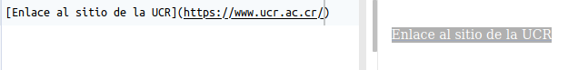

Markdown¶
En este capítulo, se introduce el lenguaje de marcado Markdown. Para probar la sintaxis, se sugiere crear un documento Markdown (.md) en GitHub.
El lenguaje de marcado Markdown¶
Markdown es un lenguaje de marcado creado en 2004 por John Gruber. Las “marcas” se utilizan para brindar información acerca de la presentación (ej. negritas, itálicas) o la estructura (ej. títulos, encabezados) de un documento. Se caracteriza por ser más sencillo de leer y de usar que otros lenguajes de marcas (ej. HTML). Los documentos escritos en Markdown pueden exportarse a una gran variedad de formatos (ej. HTML, Doc, PDF, Latex) para ser usados en libros, presentaciones o páginas web, entre otros. Markdown es ampliamente utilizado en comunicación científica, documentación de programas e investigación reproducible.
Variaciones¶
Las variaciones de Markdown, también llamadas flavors, son extensiones o modificaciones de la especificación original. Entre las más populares están:
R Markdown: para el lenguaje R.
MyST (Markedly Structured Text) Markdown: para Jupyter Book.
GitHub Flavored Markdown: para la plataforma GitHub.
Puede consultarse una lista más extensa en https://github.com/commonmark/commonmark-spec/wiki/markdown-flavors.
Sintaxis¶
La sintaxis de Markdown permite especificar diferentes componentes de un documento, entre los que están:
Encabezados.
Estilos (ej. negritas, itálicas).
Citas textuales.
Enlaces a otros documentos (ej. páginas web).
Imágenes.
Listas.
Encabezados¶
Pueden definirse seis niveles de encabezados, con los símbolos de numeral (#) antes del texto. El primer nivel es el más grande y el sexto el más pequeño. A la izquierda se muestra la sintaxis Markdown y a la derecha la forma en que se despliega en un documento.

Itálicas¶
Se definen con un asterisco (*) antes y después del texto o con un guión bajo (_) antes y después del texto.

Negritas¶
Se definen con dos asteriscos (**) antes y después del texto o con dos guiones bajos (__) antes y después del texto.


Enlaces a otros documentos¶
Se definen con un paréntesis cuadrados[] seguidos de paréntesis redondos (). En los paréntesis cuadrados se coloca (opcionalmente) el texto del enlace y en los redondos la dirección del documento.

Imágenes¶
Se definen con un signo de admiración de cierre (!), paréntesis cuadrados[] y paréntesis redondos (). En los paréntesis cuadrados se coloca (opcionalmente) un texto para la imagen y en los redondos la dirección de la imagen, ya sea en el disco o en la red.


Otros elementos de sintaxis¶
Para conocer otros elementos de la sintaxis de Markdown, se recomienda revisar en detalle:
Guía de referencia de Markdown: Markdown Guide
Tutorial sobre Markdown: Markdown Tutorial